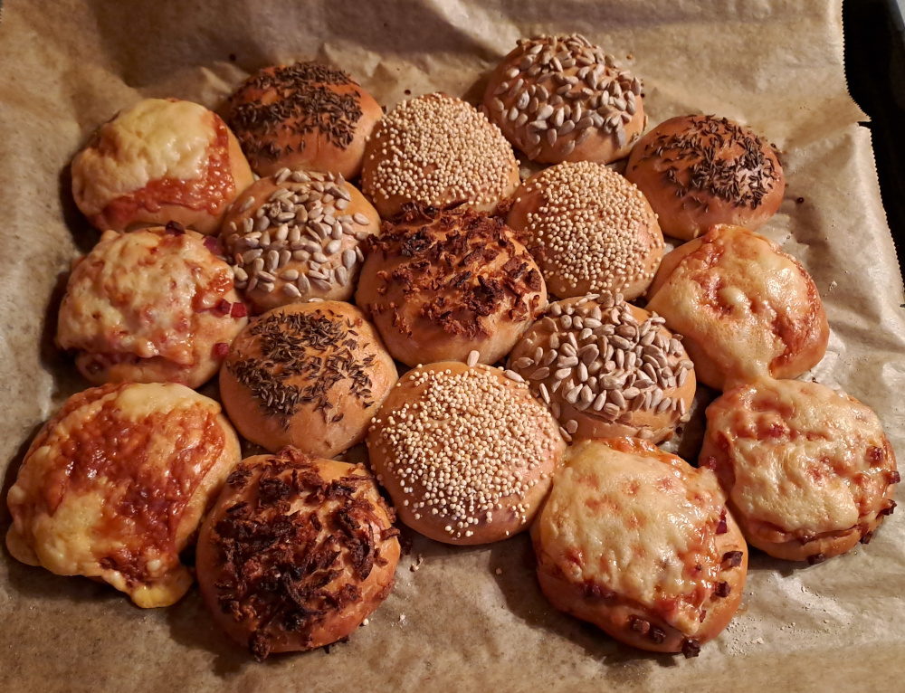

Partysonne

Zutaten:
- 100g Sauerteig
- 300g Dinkelmehl
- 6 Esslöffel Sonnenblumenöl
- 1 Esslöffel Honig oder Sirup
- 400ml Wasser
- 200ml Milch
- 1 Ei und etwas Milch
Belag (Beispiele/Vorschläge)
- Käse
- Sesam
- Sonnenblumenkerne
- Mohn
- Kümmel
Zubereitung:
- Die Zutaten (bis auf das Ei und einen kleinen Schluck Milch) gründlich verkneten
- Den Teig Zimmertemperatur 20-30 Minuten gehen lassen
- Durchkneten, in kleine Brötchen teilen
- Milch und Ei verquirlen, die Brötchen damit bestreichen
- Nach belieben belegen/bestreuen
- Ringförmig auf ein Backblech setzen, dabei wenig Platz lassen, damit die gewünschte Form erreicht wird
- Nochmal 10-15 Minuten gehen lassen
- bei 200 Grad für etwa 30 Minuten Backen (Ober/Unterhitze)